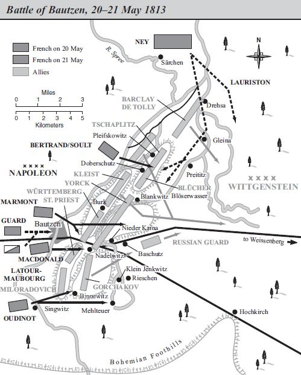

Thoạt tiên đi bằng xe trượt tuyết, rồi xe ngựa, Napoléon đã vượt qua Ba Lan, Đức và Pháp trong 12 ngày, và sáng 18 tháng 12 năm 1812 thì về đến điện Tuileries. Biết được những sự nguy hiểm có thể xảy tới trong những ngày khốn đốn này, Napoléon đi rất bí mật: Ông không ngộ nhận những tình cảm chân thật của người Đức đối với mình. Caulaincourt, người đi theo Napoléon, có kể lại sự tuyệt đối bình tĩnh, lòng can đảm, nghị lực và ý chí tiếp tục chiến đấu của Napoléon. Khi bàn về cuộc chiến tranh vừa kết thúc, ông Hoàng Đế đã nói với Caulaincourt rằng nếu như ông ta đã phạm sai lầm thì không phải sai lầm về mục đích, cũng như về thời cơ chính trị của cuộc chiến tranh, mà sai lầm về phương pháp chỉ đạo chiến tranh. Napoléon cho rằng nếu cứ ở lại Vitebsk thì bây giờ Aleksandr đã phải quy hàng dưới gối. Tóm lại, trong khi trao đổi, Napoléon đã nói bằng giọng của một nhà quán quân chỉ trích những thiếu sót của mình sau một ván cờ bị thua, trước khi mở đầu một ván khác mà ông ta quyết thắng: Không mảy may ghê sợ dĩ vãng, không hề nghĩ đến sự giảm sút uy tín khuynh đảo cả thiên hạ của bản thân, cũng không hề có dấu hiệu suy sụp tinh thần như người ta đã luôn luôn thấy rất rõ ở Napoléon vào những 1810 - 1811, thời kỳ Napoléon đang có đầy rẫy uy quyền và danh vọng. Về mặt ấy thì chiến tranh là thế giới, là sự sống của Napoléon, chả thế mà khi chuẩn bị hoặc khi tiến hành chiến tranh, lúc nào Napoléon cũng làm cho người ngoài cảm thấy ông là một người tràn trề sức sống, thở đầy lồng ngực, và kể từ khi lên xe ngồi với Caulaincourt, vấn đề duy nhất mà Napoléon quan tâm lo lắng là cuộc chiến tranh là sự chuẩn bị về mặt ngoại giao và quân sự cho cuộc chiến tranh đó. Có phải rằng rồi đây sẽ chỉ chiến đấu với riêng người Nga như vừa qua không? Châu Âu có nổi dậy không và nước nào sẽ giương ngọn cờ khởi nghĩa trước tiên; liệu có thể (và bằng cách nào) ngừa trước được cuộc nổi dậy đó không? Phải mất bao nhiêu tháng mới tổ chức được một đạo quân mới? Dọc đường, Napoléon dừng lại ở Warszawa và cho gọi giáo sĩ Priest, đại sứ Pháp ở triều đình vua xứ Saxony; chính Priest cũng phải sững sờ kinh ngạc trước sự bình tĩnh của Napoléon. Chính trong cuộc gặp gỡ này, Napoléon đã nói những lời nổi tiếng sau đây: “Từ chỗ tuyệt vời đến chỗ lố bịch, chỉ có một bước mà thôi”, và hậu thế sẽ phê phán điều đó. Nhưng Napoléon đã nói thêm rằng, chẳng bao lâu nữa ông sẽ quay lại sông Vistula với một đạo quân 30 vạn người và quân Nga sẽ phải trả thắng lợi của họ bằng một giá đắt, những thắng lợi không phải thuộc về bản thân họ, mà thuộc về thiên nhiên. Ai chẳng có lúc nếm mùi thất bại! Đương nhiên là chưa có ai đã phải chịu đựng những thất bại tương tự. Napoléon thú nhận như vậy, song bao giờ thất bại cũng tương xứng với cảnh ngộ, hơn nữa, rồi đây những thất bại ấy sẽ được đền bù.
Như trên đã nói, Napoléon về đến Paris ngày 18 tháng 12, và ông nhận ngay ra là tinh thần dân chúng sụt xuống rất nhiều. Hai ngày trước khi Napoléon về đến thủ đô, những tin chẳng lành, đồn đại từ lâu, đã được xác nhận bằng bản tin quan trọng số 29 trong đó Hoàng Đế đã nói một cách khá chân thật về chiến dịch nước Nga và sự kết thúc của nó.
Tang tóc gieo xuống hàng chục vạn gia đình đã làm cho không khí cả nước Pháp trở nên đặc biệt nặng nề. Những ngày tiếp theo, Napoléon tiếp kiến các Bộ Trưởng, các uỷ viên Hội Đồng Chính Phủ và Thượng Nghị Viện. Bằng những lời lẽ nghiêm khắc và khinh bỉ, Napoléon phê phán các nhà cầm quyền thiếu nhanh trí trong vụ tướng Malet và yêu cầu họ phải báo cáo về các xử trí của họ, nhưng ông ta chỉ nói phớt qua về chiến dịch nước Nga và cũng chẳng thèm trình bày chi tiết về vấn đề đó.
Các quan đại thần và các đình thần tiếp đón Napoléon bằng thái độ nịnh hót, khúm núm quen thuộc của bọn họ. Với lòng sốt sắng vô hạn, chủ tịch Thượng Nghị Viện Lacépède đề nghị cho phép ông ta được chính thức tiến hành tổ chức lễ đăng quang cho người thừa kế Hoàng Đế lúc đó mới một tuổi rưỡi, để “tượng trưng cho sự kế tục của triều đại”; cả Thượng Nghị Viện khom lưng cúi xuống dưới chân ông Hoàng Đế đang ngồi trên ngai. Trong bài diễn văn đọc trước Thượng Nghị Viện, quan sát cái cách nhắc đến chiến dịch nước Nga của Napoléon, người ta thấy rõ ràng là ông ta lại nuôi các ảo mộng mà dường như ông ta đã hoàn toàn từ bỏ khi ra lệnh cho Thống Chế Mortier phá hoại điện Kremlinn: Ông ta cho rằng bây giờ cũng vẫn còn có khả năng ký hòa ước với Aleksandr bằng cách tuyên bố hai bên bất phân thắng bại.
“Cuộc chiến tranh mà tôi theo đuổi là một cuộc chiến tranh chính trị. Tôi đã tiến hành cuộc chiến tranh đó với lòng căm thù, và tôi đã cố tránh cho nước Nga những tai họa do chính nước Nga tự gây ra. Lẽ ra tôi đã có thể vũ trang cho một bộ phận nhân dân Nga chống lại nước Nga bằng cách tuyên cáo cho nông dân được tự do... Một số lớn làng mạc, thôn xóm đã yêu cầu tôi làm việc đó, nhưng tôi phải từ chối cái biện pháp đưa hàng nghìn gia đình đến chỗ chết ấy...”. Không đếm xỉa đến các nguyên lão Nghị Viện, thật ra Napoléon đã nói với các lãnh chúa Nga và với Hoàng Đế của họ, với kẻ “đứng hàng đầu” trong bọn họ (sau này em Hoàng Đế Aleksandr đệ nhất là Nikolai Pavlovich định nghĩa các Nga Hoàng Nga như vậy). Lúc này Napoléon đòi Nga Hoàng và các lãnh chúa phải biết ơn ông ta về việc đã tha cho bọn họ một cuộc nổi loạn của nông dân chống quý tộc theo kiểu Pugachev, tuồng như chẳng bao giờ Napoléon có ý định dùng đến thủ đoạn ấy cả. Tất cả những sự quỵ lụy ấy của bọn đại thần trong đế chế và của những người cầm quyền, cả tấn hài kịch dối trá hèn hạ đó, mà từ trên ngai vàng ông Hoàng Đế đã đáp lại cũng bằng một sự dối trá ngạo mạn và nóng nảy, chỉ là một thủ đoạn do tình thế bức bách và nhằm đánh lạc hướng chú ý của nước Pháp và của Châu Âu. Hai mục tiêu quan trọng bậc nhất của Napoléon là trước hết phải tổ chức được một đạo quân, sau nữa là phải đảm bảo được một sự viện trợ, bằng không thì cũng phải tranh thủ được sự trung lập của nước Áo và hết sức cố gắng để có thể của cả nước Phổ nữa.
Mục tiêu thứ nhất đã đạt được dễ dàng, mau lẹ. Khi còn ở trên đất nước Nga, Napoléon đã hạ lệnh cho gọi trước kỳ hạn lớp quân dịch năm 1813, và vào mùa xuân cùng năm đó việc huấn luyện tân binh căn bản cũng đã hoàn thành. Người ta phải vất vả lắm mới gọi được 14 vạn tân binh. Ngay từ năm 1812, Napoléon đã chỉ thị cho thành lập “những đoàn quân vệ quốc” để khi cần đến ông ta sẽ sáp nhập tất cả vào quân đội, coi như là làm theo nguyện vọng của họ, tuy rằng nhiệm vụ của đoàn vệ quốc đã được xác định rõ là giữ gìn an ninh trong nội địa của đế chế. Việc ấy cũng đã đem lại cho Napoléon thêm 10 vạn người. Tháng 6 năm 1812, Napoléon để lại ở nước Pháp và nước Đức chư hầu 23 vạn 5 nghìn người, đó là lực lượng mà hiện Napoléon có thể tin cậy được. Cuối cùng, còn lại vài nghìn người (sau này tính đúng thì vào khoảng 3 vạn người) sống sót trong chiến dịch nước Nga; thật ra, những quân đoàn được Napoléon tách ra cho về cánh Bắc (hướng Riga và Peterburg) và cánh Nam (Grodno) bị thương vong ít hơn rất nhiều so với những quân đoàn đã chiến đấu ở Borodino, nhưng sau này, trong hai tháng rút lui Moscow về sông Niemen, chúng đã bị tan rã.
Như vậy, ông Hoàng Đế đã có đủ lý do để hy vọng rằng vào mùa xuân năm 1813 sẽ có một đội quân từ 40 đến 45 vạn người, chứ không phải 30 vạn. Trong khi thừa nhận rằng con tính ấy có thể là quá lạc quan, Napoléon cũng vẫn không hoài nghi gì về khả năng tập hợp một quân đội cực mạnh; trong một thời gian rất ngắn cần phải tích cực xúc tiến việc cung cấp, tu bổ, bổ sung quân dụng, quân nhu, những xưởng công binh, pháo binh, nói tóm lại, tất cả các loại vật chất khí tài. Napoléon đã làm việc suốt ngày để tổ chức trang bị và huấn luyện bộ đội.
Mùa xuân năm 1813, sau khi Aleksandr làm thinh trước những ý kiến ngắn gọn mong muốn hòa bình của Napoléon bộc lộ trong bài diễn văn đọc trước Thượng Nghị Viện, hệt như vào mùa thu năm 1812 đối với những bức thư chuyển qua tay Tutolmin, Yakovlev và Lauriston, thì giờ đây, Napoléon đã hoàn toàn tin chắc rằng ông ta sẽ phải gặp quân Nga ở sông Vistula và sẽ đánh cho nó tan tành. Napoléon biết rõ rằng mùa đông năm 1812 đã làm cho Kutuzov thua thiệt nặng nề, mặc dù ông ta còn chưa biết rằng trong hai tháng trời truy kích từ Tarutino đến Niemen, Kutuzov đã mất hai phần ba số quân có lúc đầu là 10 vạn, và hơn hai phần ba số pháo. Với tình hình đường xá tồi tàn quá đỗi và bằng vào các phương pháp được dùng dưới chế độ nông nô, Napoléon cho rằng Kutuzov không thể nhanh chóng lấp lỗ hổng số quân có khả năng chiến đấu đã bị hao hụt và tổ chức lại pháo binh. Không nhắc lại những sai lầm của cuộc xâm lược, Napoléon yên lặng chờ đợi quân Nga trên sông Vistula và Niemen để đánh bại ở đó.
Song một vấn đề đáng sợ khác đã tự đặt ra: Quân Nga có đơn độc hay không? Từ tháng 12 năm 1812, tướng Phổ Yorck, dưới quyền chỉ huy của Thống Chế MacDonald (nước Phổ lúc này vẫn là “đồng minh” của Napoléon) đã bỗng nhiên chạy sang hàng ngũ quân Nga rồi đó sao. Đúng là Frederick Wilhelm quá khiếp nhược đã vội vàng không thừa nhận Yorck, nhưng Napoléon cũng biết rằng nếu vua Phổ không đứng về phía người Nga thì có thể sẽ bị người Nga lật đổ, vả chăng chỉ nội những lý do chủ quan của mình, Frederick Wilhelm cũng đã lâm vào nguy cơ bị người Nga lật đổ. Napoléon cũng biết rằng sẽ rất ngu xuẩn nếu không tính đến việc nước Phổ bị ông áp bức lại không tìm cách thoát khỏi sự đô hộ của ông ta, một khi quân đội Nga tiến vào nước Phổ.
Kutuzov phản đối việc kéo dài chiến tranh, không phải chỉ vì ông thấy không có lý do gì để máu của người Nga tiếp tục chảy để giải phóng nước Phổ và các quốc gia Đức, mà còn vì một lý do đơn giản và hiển nhiên nữa là Kutuzov đã nhìn thấy trước những khó khăn ghê gớm do cuộc chiến tranh với Napoléon đẻ ra, khi mà quân đội Nga yếu hơn về số quân và đã kiệt sức. Nhưng Aleksandr khăng khăng không hòa giải. Ông ta xuất phát từ nhận định rằng nếu để Napoléon được nghỉ ngơi một thời gian thì cũng như để toàn thể Châu Âu nằm dưới quyền thống trị của Napoléon như trước đây và sẽ làm cho sự uy hiếp sông Niemen trở thành thường xuyên và không thể nào tránh được. Nhưng nếu quân đội Nga, một khi đã ở lãnh thổ Phổ, được tăng viện thêm thì rõ ràng là vua Phổ sẽ bị buộc phải xuất quân đánh Hoàng Đế Pháp.
Hành động của nước Áo cũng chẳng còn làm vừa lòng Napoléon nữa. Nước Áo (với tư cách là “đồng minh” của Napoléon) coi như đã chiến tranh với Nga từ năm 1812, thì nay, bố vợ Napoléon - Hoàng Đế Francis và Metternich[52], người đang lãnh đạo đường lối chính trị ở Áo, đã ký một “hiệp định đình chiến” với nước Nga, và tất nhiên là bất chấp những mối quan hệ thân quyến mới đây, ông Hoàng Đế nước Áo đã coi hoàn cảnh mà chàng rể ông ta đang lâm phải là một đặc ân không mong mà đến của vận mệnh và như một bảo đảm cho sự giải phóng nước Áo thoát khỏi cái ách khủng khiếp đã đè nặng lên mình từ trận Wagram và Hòa Ước Schönbrunn.
Trong những cảnh ngộ khó khăn như vậy, Hoàng Đế Pháp đã nhớ đến cái việc xảy ra năm 1809: Sau khi chiếm được thành Roma, Napoléon đã cho bắt và đưa Giáo Hoàng Đến Xavon và năm 1812, trước khi đi Moscow, Napoléon lại ra lệnh dẫn Giáo Hoàng từ Xavon đến Fontainebleau. Hơn nữa, người ta đã tạo cho mọi người thấy rằng những cảnh binh đi vây quanh chiếc xe của Giáo Hoàng không có gì khác hơn là một đội quân danh dự hộ tống, và trong thời gian Giáo Hoàng ngụ tại hoàng cung ở Fontainebleau thì cũng không có gì để có thể nói được rằng Giáo Hoàng đã bị giam giữ ở đó: Giáo Hoàng là khách của Hoàng Đế. Tuy nhiên, Giáo Hoàng đã không ngớt phản kháng việc người ta cướp mất thành Roma (Napoléon đã giao Roma cho đứa con trai mới đẻ của mình, phong làm “Vua thành Roma”), cũng như phản kháng việc bị bắt giữ. Trước tình hình như vậy, ngày 19 tháng 1 năm 1813, Napoléon đã bất thần đến thăm người tù của mình. Thực tế là cần phải thỏa hiệp bằng cách này hay cách khác với những người Công Giáo là những người đã ngấm ngầm chống lại Hoàng Đế từ năm 1809. Nhưng cuộc trao đổi hữu hảo giữa Napoléon và Giáo Hoàng đã không đem lại kết quả cụ thể gì.
Napoléon ép Pius VII ký một bản điều ước mới, nhưng cũng không vì thế mà giao trả thành Roma cho Giáo Hoàng (về đại thể, bản điều ước mới sao chép lại nội dung bản điều ước năm 1802). Đối với Napoléon, những sự nhượng bộ không có tác dụng gì hết: Napoléon không ưa và cũng không biết nhượng bộ. Những trò dụ dỗ hèn kém của Napoléon đối với Giáo Hoàng vào tháng 1 năm 1813 đã chấm dứt khi Napoléon bất thần cho bắt Hồng Y giáo chủ Pietro và đưa đi khỏi Fontainebleau, Vì Napoléon đã nghe phong thanh thấy Pietro khuyên Giáo Hoàng Pius VII đối địch lại Napoléon. Nói về mưu toan thỏa hiệp không thành đó với Giáo Hoàng, Hoàng Đế đã thốt ra một câu đáng chú ý: “Thực là hiện nay phải bỏ thành Roma..." Điều ước ấy còn phải xếp vào tủ và sẽ chỉ được lôi ra sau khi đã đại thắng ở sông Elbe hay ở sông Vistula. Thật vậy, trong suốt năm 1813 ấy và những năm sau, Napoléon không ngừng tìm cách phá hoại các cuộc thương lượng với đối phương và luôn luôn mong mỏi một chiến thắng lớn. Vận may đã ủng hộ Napoléon quá lâu. So sánh toàn bộ cuộc đời Napoléon dưới ánh sáng của tất cả những sự nghiệp vĩ đại chưa từng có mà Napoléon đã hoàn thành, kể từ việc hạ thành Toulon năm 1793 đến việc sáng lập cái đế quốc rộng lớn ấy và rồi Napoléon đã dắt dẫn các lực lượng của đế quốc đó đến bên kia sông Niemen, thì dẫu sao cuộc chiến tranh năm 1812 cũng chỉ làm một chấm đen trên cả một tấm thảm mênh mông đầy thằng lợi.
Nước Phổ đã sẵn sàng phản lại: Vua Phổ đòi Napoléon rút quân ra khỏi một số vị trí, đòi 94 triệu francs dùng vào việc nuôi dưỡng quân đội Pháp mà ngân khố của Hoàng Đế còn nợ lại, nhưng đã bị từ chối. Nước Anh không thể thừa nhận sự xâm lược nước Tây Ban Nha của người Pháp, và Napoléon, ngày 14 tháng 2, khai mạc khóa họp Hội Đồng Lập Pháp, đã dứt khoát tuyên bố rằng: “Triều đại Pháp đang trị vì và sẽ trị vì Tây Ban Nha”. Vào tháng 3, Metternich đã tỏ ý muốn biết những điều kiện mà Napoléon sẽ ưng thuận để ký một hòa ước chung, nhưng đã không được trả lời một cách rõ ràng. Đối với tất cả các vấn đề này, thái độ của Napoléon cũng giống như đối với Giáo Hoàng: Một trận thắng lớn ở sông Vistula hay ở sông Niemen sẽ quyết định hết thảy. Trong bài diễn văn ngày 14 tháng 2, Napoléon bảo đảm rằng toàn bộ đất đai của đế chế sẽ không thể đụng chạm đến được và Đại Công Quốc Warszawa sẽ vẫn tồn tại trong biên giới hiện nay. Lúc này, Metternich chưa muốn cắt đứt quan hệ với Napoléon nên đã nói với Otto, sứ thần Pháp ở Vienna, rằng với những lời tuyên bố như vậy, Napoléon làm cho hòa bình với nước Nga, cũng như nước Anh và với nước Phổ sẽ không thể nào có được.
Khi những phái viên Áo ở London bên cạnh Castlereagh, ở Kärlich bên cạnh Aleksandr thăm dò dư luận thì ở đâu người ta cũng chỉ trả lời rằng: Nếu Napoléon khăng khăng không chịu nhượng bộ thì chỉ có chiến tranh mới có thể giải quyết được. Cuối cùng vua Phổ đã công nhiên đứng về phía Aleksandr và ký một hiệp ước liên minh với Aleksandr. Napoléon đáp lại bằng cách tuyển thêm tân binh. Xứ Saxony, Bavaria, Württemberg, Baden vẫn còn chịu khuất phục.
Ngày 15 tháng 7 năm 1813, Napoléon trở lại với quân đội ở Erfurt và tiến quân đánh nước Nga và nước Phổ. Đội quân mới này được trang bị rất hoàn chỉnh. Trong những tháng đầu năm đó, Napoléon đã miệt mài làm việc để huấn luyện và tổ chức quân đội, dành nhiều đêm để chấn chỉnh lại nền tài chính đến mức quân đội không còn thiếu thốn một thứ gì, và có thể mua tất cả những thứ gì cần thiết cho quân đội bằng tiền vàng thật và đủ cân lượng, vì thật ra điều quan trọng là không nên phá hoại và làm cho nhân dân các quốc gia German bất mãn, chừng nào họ còn là “đồng minh”, ít ra thì cũng còn đang chịu khuất phục.
Napoléon có 20 vạn quân tại ngũ; quân dự bị, cũng tương đương như vậy, đã được tập trung hoặc đang được thành lập. Kutuzov chết đúng vào trước khi chiến dịch mở màn, và khi chiến sự bắt đầu thì quân Nga và quân Phổ đã không có tướng chỉ huy. Ngay lúc đầu, Napoléon đã giành được một số thắng lợi. Quân Nga bị đánh đuổi khỏi Weissenfels, sau đó đã diễn ra những trận đánh vào ngày 1 và ngày 2 tháng 5 ở gần Weissenfels và Lützen. Napoléon đã hoàn toàn chiến thắng. Ở Weissenfels, Thống Chế Bessières, đứng cạnh Hoàng Đế, trước đội cựu cận vệ mấy bước, bị một mảnh đạn đại bác bắn trúng, vỡ ngực chết. “Thần chết đang đến gần chúng ta”, Napoléon nói như vậy vừa nhìn người ta liệm Thống Chế trong tấm áo choàng của Hoàng Đế để đưa ra khỏi chiến trường.
Trận Lützen đã diễn ra giằng đi giật lại và đẫm máu. Cưỡi ngựa từ cánh này sang cánh kia, Napoléon điều khiển mọi hành động tác chiến. Aleksandr và Frederick Wilhelm ở gần chiến trường nhưng không tham gia gì. Quân Nga và quân Phổ bị đánh lùi, mất chừng 2 vạn người, nhưng số thiệt hại của quân Pháp cũng không kém mấy. Vài ngày sau, Napoléon tiến vào Dresden.
Sau trận Lützen, Metternich tìm cách lập lại hòa bình giữa Napoléon và quân Liên Minh bằng cách đảm bảo rằng nước Áo sẽ liên minh với Napoléon theo những điều kiện sau đây: Napoléon sẽ bỏ Đại Công Quốc Warszawa, bỏ nền bảo hộ Liên Bang Sông Rhine, bỏ các thành phố đồng minh thương nghiệp ở miền Tây Bắc nước Đức và Illyria. Còn ngoài ra, Napoléon sẽ giữ lại tất cả; nước Bỉ, toàn bộ nước Ý, nước Hà Lan, vương quốc Westphalia vẫn nằm trong đế quốc của Napoléon. Napoléon từ chối. Ông ta nói với tướng Bubna, sứ thần của triều đình Vienna: “Tôi không cần sự điều đình bằng vũ lực của các ông, các ông muốn đục nước béo cò...”. Bằng một giọng châm biếm, Napoléon còn nói thêm: “Không phải cứ đổ nước hoa ra là chiếm được đất”. Thoạt tiên, người Áo đòi Napoléon trả Illyria, nhưng rồi họ sẽ còn đòi cả Venice, Milan, Toscany, thì ra họ bức Napoléon phải đánh nhau với họ. Chi bằng đánh nhau ngay. Nếu họ muốn lấy lại các tỉnh từ tay Napoléon thì họ cần phải rút gươm ra khỏi vỏ, họ kết luận như vậy. Ông quyết tâm tiếp tục chiến đấu và chiến đấu mãi mãi, không nhượng bộ chút gì cả. Một phong trào chống Napoléon ở Hamburg. Hoàng Đế phái Davout đến đó để trừng phạt những thành phố đồng minh thương nghiệp ở miền Tây Bắc nước Đức về tội chống lại cảnh sát và nhân viên hải quan Pháp đã phá hoại việc buôn bán của họ bằng sự thực hiện nghiêm ngặt cuộc phong tỏa lục địa. Napoléon ra lệnh cho Davout bắn một số nghị sĩ của tỉnh - những người cầm đầu phong trào chống Pháp, một số sĩ quan, bắt 500 công dân có uy tín nhất, có tiếng là có tư tưởng chống đối và tịch thu toàn bộ tài sản của họ.
Sau khi ra những lệnh trên xong, Napoléon rời Dresden, dẫn đầu đội cận vệ, đuổi theo bộ đội đang tiến về phía Đông, theo hướng Bautzen (trên sông Spree). Trên đường từ Dresden đến Breslau, cùng đi với Napoléon có bốn quân đoàn: Của Ney, của Marmont, của Oudinot và của Bertrand. Quân Liên Minh thì đặt dưới quyền chỉ huy của Wittgenstein, Barclay de Tolly, Miloradovich và Blücher. Trận Bautzen bắt đầu ngày 20 đến tối ngày 21 thì kết thúc. Napoléon điều quân đoàn của Ney đánh vòng lên phía Bắc cánh phải của đối phương, nhưng vì Napoléon không chú ý đến những lời chỉ bảo của tham mưu trưởng Jomini nên đến chiến trường quá chậm. Quân Liên Minh đã rút lui có trật tự.

.Trận đánh cũng đẫm máu như ở Lützen. Cả hai bên đều mất chừng 3 vạn người vừa chết và bị thương. Thắng lợi lại thuộc về phía Napoléon và Napoléon dự định đẩy lùi quân Nga và quân Phổ đang rút lui, tiến thẳng đến Berlin. Quân Liên Minh vừa đánh vừa lùi làm chậm bước cuộc truy kích. Ngày 22 tháng 5, Napoléon đã xông tới và đánh tan đội hậu vệ của quân Liên Minh ở Gneisenau. Tối đến, lúc trận đánh sắp sửa kết thúc, trong khi đối phương đang rút lui thì Duroc tới trao đổi với Napoléon một lát, rồi vừa bỏ đi vừa buồn bã nói với Caulaincourt: “Ông bạn, ông có để ý thấy gì ở Hoàng Đế không? Hoàng Đế vừa mới giành được những thắng lợi sau nhiều trận thất bại và lẽ ra đây phải là lúc áp dụng những bài học rút ra được trong thất bại. Nhưng ông thấy đấy, Hoàng Đế không thay đổi gì cả, vẫn ham chiến. Tất cả những điều ấy sẽ chẳng đưa đến kết quả tốt đẹp gì“. Và giờ chót của Thống Chế Duroc đến. Một mảnh đại bác bắn vào cây gần chỗ Napoléon đứng đã bật vào Duroc. Duroc còn đủ sức chúc ông Hoàng Đế thắng lợi và ký được hòa ước. Napoléon trả lời: “Xin vĩnh biệt bạn, có lẽ mấy chốc mà chúng ta sẽ lại gặp nhau”.
Cái chết của Duroc, một trong số rất hiếm người được Napoléon yêu và tin cậy, đã làm cho Napoléon bị xúc động mạnh. Napoléon bất giác ngồi xuống một gốc cây: Những mảnh trái phá của quân hậu vệ Phổ rơi quanh người, nhưng Napoléon vẫn ngồi đó rất lâu, chìm đắm trong những ý nghĩ riêng. Trong chiến dịch năm 1813 này, Napoléon thường xông pha vào nơi nguy hiểm và nhất là trong những trường hợp không cần thiết một chút nào, điều đó trước đây Napoléon không bao giờ làm và đã phản lại quan niệm của Napoléon về vị trí của một người tướng tổng chỉ huy ở ngoài mặt trận. Những người ở gần Napoléon cũng nghĩ rằng ông thầm tìm cái chết và cố che giấu mọi người. Hầu như suốt trong thời gian quân Pháp truy kích, quân Nga và quân Phổ đã dùng pháo bắn lại rất mãnh liệt để yểm hộ cuộc rút lui của họ, nhưng Napoléon ngang nhiên đi với đội tiền vệ, ở chỗ nguy hiểm nhất, mặc dầu về mặt quân sự ông không cần thiết phải có mặt ở đó.
Sau trận Bautzen và sau vài ngày truy kích, hai bên tham chiến đã chấp nhận đề nghị hòa giải của nước Áo do Metternich đề xướng và, ngày 4 tháng 6 năm 1813, ký hiệp nghị đình chiến Pläswitz.
Mặc dầu, theo đề nghị của Metternich, bên phe Liên Minh cũng như Napoléon đã thỏa thuận cử đại diện toàn quyền của mình đến Prague để đàm phán, nhưng khi ký hiệp định đình chiến, cả hai bên đều không muốn có hòa bình thật sự. Quân Liên Minh biết rằng trước trận Lützen và Bautzen, Napoléon đã không chịu nhượng bộ một chút nào thì bây giờ, sau khi đã chiến thắng hai trận, lại càng không chịu; còn về phía mình, nếu như Aleksandr đã bằng lòng ký hiệp định đình chiến thì đó chỉ vì Barclay de Tolly đã tuyên bố dứt khoát là sau những thất bại, quân đội cần phải được hồi phục, củng cố đội ngũ và tăng viện. Napoléon cũng vậy, ông ta thỏa thuận đình chiến cũng chỉ nhằm tăng cường quân đội của mình để có thể đè bẹp quân Liên Minh một lần cho rồi. Đồng ý hoãn chiến, Napoléon đã phạm một sai lầm tai hại vì sự đình chiến chỉ có lợi cho đối phương, chứ không có lợi cho Napoléon, và vì nó cũng là một trong những nguyên nhân làm cho nước Áo từ bỏ vai trò trung gian hòa giải để nhảy sang hàng ngũ Liên Minh.
Đáng lấy làm lạ khi người ta nhận thấy rằng quân Liên Minh đã không nhận ra được sai lầm ấy của Napoléon, tuy rằng, sau đó khá nhiều năm, các tướng lĩnh của họ (Nga và Phổ, cũng như thái tử nước Thụy Điển Bernadotte) đều quả quyết nói rằng họ đã rất khéo biết lợi dụng hiệp ước đình chiến ngay từ buổi đầu và họ rất lấy làm hài lòng về hiệp định ấy. Tuy nhiên, chúng ta có chứng cớ không thể chối cãi được sau đây của trung tá Vladimir Ivanovic Lowenstein, người đã có điều kiện quan sát tường tận tình trạng tư tưởng đang diễn ra trong các bộ tham mưu của quân Liên Minh: Ông khẳng định rằng: “Trong quân đội Liên Minh, ở Phổ, trong các quốc gia German, nơi đâu người ta nói tiếng Đức thì nơi đó người ta than thở rằng cái hiệp định đình chiến ấy là một tai họa ghê gớm nhất”. Và, với sự châm biếm đúng đắn, Lowenstein đã thốt lên: “Ôi, trí tuệ của con người!”. Những ghi chép ấy của Lowenstein (Denkwurdigkeiten eines Livlanders), một người Đức, là một trong những tài liệu quý báu và vô tư nhất về lịch sử năm 1813, trong khi ấy thì nhiều tác giả Pháp, Nga, Áo và Thụy Điển, khi ghi chép về nó, đã vô tình hay hữu ý đưa ra nhiều điều dối trá.
Thế là hiệp ước đình chiến đã được ký kết, nhưng Napoléon không tin rằng việc đó đem lại cho ông ta những cơ hội chắc chắn để đi đến một nền hòa bình mà ông ta hằng mong mỏi, và ông ta đã kiên quyết không ký một hiệp ước đình chiến nào khác nữa. Được tất cả hoặc mất hết: Đó là khẩu hiệu của Napoléon khi khởi động cuộc chiến lớn năm 1813, và Napoléon đã theo đuổi cuộc chiến cũng với khẩu hiệu ấy. Ngay khi ở đảo Saint Helena, sau khi đã mất hết, kể cả sự tự do của mình, ông Hoàng Đế cũng không bao giờ tỏ ý mảy may tiếc rằng mình đã phạm phải sai lầm ấy, bởi đối với ông điều đó tuyệt nhiên không phải là một sai lầm. Ông nói một cách mỉa mai rằng mặc dầu ông hoàn toàn thất bại, ông vẫn có thể chiến bại trở về và ngồi vững trên ngai vàng, nếu không phải là chính ông thì là cháu đích tôn ông. Ông còn xác định nhiều lần rằng giữa ông và các vị vua chúa thừa kế tọa hưởng kỳ thành có sự khác nhau rất lớn.
Sau những khủng khiếp của chiến dịch Moscow làm cho hầu hết nhân dân Pháp chìm đắm trong đau khổ, Paris đã đón tiếp Napoléon bằng một sự khuất phục hoàn toàn. Vậy thì một sự đón tiếp như vậy ắt cũng sẽ diễn ra nếu như sau chiến dịch rực rỡ mùa xuân năm 1813, Napoléon trở về vẫn giữ được tất cả những miền đất đai rộng lớn của mình (trừ xứ Illyria vô tác dụng nằm xa lắc xa lơ tít trong vùng Balkan) mà chỉ hy sinh mất có Đại Công Quốc Warszawa và Liên Bang Sông Rhine, nơi Napoléon không trực tiếp trị vì, chỉ thông qua các chư hầu, và các nước ấy cũng chẳng phải là thành viên hợp thành đế quốc của Napoléon. Nhưng Napoléon hiểu rằng những sự nhượng bộ ấy, sự từ bỏ ý đồ hoàn thành việc xây dựng một đế quốc quy mô toàn thế giới sẽ có nghĩa là sự thắng lợi của nước Anh về mặt kinh tế và chính trị. Nhiệm vụ mà Napoléon từ đặt ra sẽ bị bỏ dở, nền thương nghiệp và công nghiệp Pháp sẽ không chống chọi được với thương nghiệp và công nghiệp Anh, cuộc khủng hoảng năm 1811 sẽ trở thành một hiện tượng mãn tính, nạn thất nghiệp cũng vậy, cuộc “cách mạng của những cái bụng rỗng”. Một cuộc cách mạng không sợ gì súng đạn, sẽ “định cư” ở các khu trung tâm thợ thuyền, ở thủ đô và ở các tỉnh; còn đối với giai cấp tư sản mà Napoléon là người cầm đầu đầy thế lực và trung thành trong cuộc đấu tranh kinh tế chống nước Anh thì Napoléon cũng chỉ là con người vô dụng. Vì cái gì mà giai cấp tư sản Pháp cứ phải tiếp tục chịu đựng sự chuyên chế chưa từng thấy của Napoléon? Và trị vì theo kiểu khác thì Napoléon không muốn mà bản chất Napoléon cũng không cho phép. Những cái đó đã thúc đẩy Napoléon phái Davout đến Hamburg, Roma, Lubeck, mang theo những lệnh nghiêm ngặt, để tiến hành những cuộc xử bắn và tịch thu tài sản vào giữa lúc Metternich đang cố hết sức thuyết phục Napoléon từ bỏ những nơi đó. Những cái đó đã làm cho Napoléon không những không nghĩ đến hòa bình và sự quay trở lại Paris, mà lại nghĩ đến một chiến dịch mới trên sông Vistula và Niemen và đã làm cho cuộc thương lượng ở Prague trở thành một màn hài kịch hão huyền. Người ta bàn với Napoléon nhượng lại Hamburg trong khi Napoléon nghĩ đến Niemen, người ta đề nghị với Napoléon bỏ Illyria trong khi Napoléon còn chưa triệu về những gián điệp và trinh sát viên do Napoléon phái đến Thổ, Ba Tư, Syria, Ai Cập trước khi bước vào chiến dịch nước Nga. Sự tranh chấp chỉ có thể giải quyết bằng súng đạn, không thể bằng những thủ đoạn ngoại giao tế nhị.
Thực tế đường lối ngoại giao của nước Áo là không muốn Napoléon chiến thắng hoàn toàn quân Liên Minh và cũng không muốn quân Liên Minh chiến thắng Napoléon, vì như vậy sẽ làm cho Nga Hoàng trở nên bá chủ. Metternich muốn hướng Napoléon vào con đường nhượng bộ, và khi vừa đến Dresden, ngày 28 tháng 6 năm 1813, Metternich đã đến yết kiến Hoàng Đế Pháp lúc ấy đang ngự ở đó.
Napoléon mở đầu bằng dọa nạt, dứt khoát buộc tội nước Áo là viện cớ đứng làm trung gian hòa giải để chuẩn bị bỏ sang hàng ngũ quân Liên Minh. “Các ngài hãy nói cho tôi rõ, có phải các ngài muốn chiến tranh với tôi không? Thì ra con người ta không thể giáo hóa được! Thì ra những bài học đường đời chẳng giúp ích gì họ cả! Bất chấp những kinh nghiệm đau đớn của họ, người Nga và người Phổ phấn khởi say sưa vì những chiến thắng mùa đông năm ngoái, đã cả gan giao chiến với tôi và tôi đã đánh cho thua, thua tơi bời, mặc dầu họ đã nói với các ngài trái hẳn lại. Thế các ngài, các ngài cũng muốn đến lượt các ngài chăng? Được, sẽ đến lượt các ngài. Tôi hẹn gặp các ngài ở Vienna, vào tháng 10”.
Rất lễ phép nhưng rất kiên quyết, Metternich biện bác rằng nước Áo không có những ý định như vậy, mà chỉ muốn có một nền hòa bình lâu dài. Và Metternich đã nêu ra những điều kiện cho hòa bình: Napoléon đồng ý nhường Illyria, Hamburg, Breme và Lubeck, Đại Công Quốc Warszawa và từ bỏ danh nghĩa bảo hộ đối với Liên Bang Sông Rhine, ngoài ra thì Napoléon sẽ giữ lại tất cả những đất đai còn lại. Napoléon đã nổi khùng: “Này, tôi đã rõ điều bí mật của các ngài, tôi biết trong thâm tâm các ngài muốn gì rồi... Người Áo các ngài muốn toàn bộ nước Ý, bạn các ngài là người Nga muốn nước Ba Lan; người Phổ muốn xứ Saxony; người Anh muốn nước Hà Lan và nước Bỉ, và nếu hôm nay tôi nhượng bộ thì ngày mai các ngài sẽ đòi hỏi những thứ mà các ngài thèm khát ấy. Nhưng muốn thế, các ngài hãy chuẩn bị gọi hàng triệu quân, hãy chuẩn bị đổ máu hết thế hệ này đến thế hệ khác và đến thương lượng ở chân đồi Montmartre”. Metternich đáp lại rằng người ta chẳng đòi hỏi Napoléon như vậy, rằng hòa bình mà người ta đề nghị với Napoléon là một nền hòa bình cao cả, vẻ vang. Napoléon bèn viện ra cái lập luận rằng đối với ông ta, nhượng bộ là nhục nhã. “Vua chúa của các ngài ra đời trên ngai vàng nên không thể hiểu được những tình cảm trong người tôi. Họ chiến bại trở về thủ đô, việc đó đối với họ chẳng sao cả. Nhưng tôi, tôi không thể nào trở về với danh dự giảm sút giữa nhân dân tôi được; tôi vẫn phải vĩ đại, quang vinh và được kính phục”.
Metternich đáp lại rằng, nếu như vậy thì chiến tranh sẽ không bao giờ kết thúc mà hiện nay toàn thể Châu Âu cũng như nước Pháp đã bị chiến tranh làm kiệt quệ và cần có hòa bình. “Tâu Hoàng Thượng, tôi vừa đi qua các trung đoàn của Hoàng Thượng,binh lính của Hoàng Thượng là những thiếu niên. Hoàng Thượng đã trưng binh trước tuổi và đã gọi vào quân ngũ một thế hệ vừa mới đến tuổi thành niên; thế hệ này một khi bị cuộc chiến tranh hiện nay hủy hoại đi thì rồi Hoàng Thượng có còn gọi lính trước kỳ hạn được nữa hay không? Liệu Hoàng Thượng có gọi đến thế hệ trẻ hơn họ nữa hay không?” Trong tập ký ức của mình, Metternich kể lại rằng lúc đó Napoléon phát điên phát khùng quẳng mũ xuống đất thét lên: “Ngài không phải một người lính, thưa ngài, ngài không có tâm hồn của một người lính; ngài chưa sống trong trại lính, ngài chưa học cách xem thường tính mạng của người khác và của ngài khi cần đến 20 vạn người làm được cho tôi những gì?”. Đó là những lời trơ tráo nhất mà Napoléon đã thốt ra để lăng nhục đối phương trong một cơn thịnh nộ. “Dẫu sao thì những người Pháp mà máu của họ đang được ngài bảo vệ đã không oán trách tôi lắm đâu. Đúng là tôi đã mất 20 vạn quân ở nước Nga, trong số đó có 10 vạn lính Pháp, những người lính ưu tú; tôi tiếc những người đó... đúng, tôi rất tiếc họ, còn những người khác, họ là người Ý, người Ba Lan, và chủ yếu là người Đức”, Napoléon nói tiếp và kèm vào tiếng cuối cùng ấy một điệu bộ khinh bỉ. “Thì cứ cho là thế" Metternich đáp lại, “nhưng thưa Bệ Hạ, chắc Bệ Hạ cũng đồng ý rằng đây không phải chuyện bênh vực riêng gì một người Đức nào”.
Sau những lời tuyên bố như thế, đương nhiên là cuộc gặp gỡ không đưa đến kết quả gì. Napoléon đã soi mói nhận xét rằng nước Áo đã khoác lác về lực lượng quân sự của họ, và khi Metternich yêu cầu Napoléon cho phép tiến hành đứng trung gian điều giải về mặt ngoại giao theo những quy định sẵn thì Napoléon đã nói rằng: “Chà, ngài cố tình, ngài vẫn cứ muốn cưỡng bức tôi. Này, ngài Metternich, nước Anh đã đãi ngài bao nhiêu để gây chiến với tôi. Thôi được! Chiến tranh thì chiến tranh! Nhưng thôi, xin tạm biệt, gặp nhau ở Vienna!”. Trong cơn thịnh nộ, Napoléon còn hỏi Metternich rằng nước Anh đã cho ông ta bao nhiêu để đóng vai trò này với Napoléon.
Khi Metternich cáo từ và đi ra thì Thống Chế Berthier - một người rất khao khát hòa bình và coi những điều kiện mà Metternich đưa ra là những điều hoàn toàn có thể chấp nhận được và rất vẻ vang - đã hỏi Metternich về kết quả cuộc hội đàm. “Tôi cam đoan với ông rằng thủ lĩnh của ông mất trí rồi" - Metternich đáp.
Mặc dầu cảnh kịch ấy đã diễn ra (trong đó, ngoài những lời tuyên bố khác ra, Napoléon còn nói rằng ông ta đã gia ơn cho nước Áo khi kết hôn với Marie Louise, và đó là một “sự điên rồ” của ông ta) nhưng cuối cùng Napoléon cũng đã chấp nhận việc nước Áo đứng trung gian hòa giải, tuy không có sự giao ước chính thức nào. Ngày 12 tháng 7 năm 1813 trong khi các viên đại diện toàn quyền Nga, Phổ và Áo hội họp ở Prague theo lời mời của Metternich và đang đàm phán mất thời gian vô ích thì quân đội của Napoléon được tăng cường, nhưng tình hình chính trị chung thì lại trở nên nghiêm trọng rõ rệt. Giữa lúc ấy, những tin tức về tình hình nguy khốn và thất trận của Pháp ở Tây Ban Nha bay tới. Quân Anh và quân du kích Tây Ban Nha đã đuổi quân Pháp đến tận dãy núi Pyrenées. Wellington đã chiến thắng ở Vittoria.
Biết trước là cuộc đàm phán ở Prague sẽ không đi đến kết quả gì và hơn nữa cũng không muốn đi đến kết quả, nên Napoléon đã cố tình kéo dài sự việc. Các đại diện toàn quyền Nga và Phổ, ngay cả Metternich, đều lấy làm bất bình và nổi giận trước những thủ đoạn đàm phán ấy. Các viên đại diện đó đã ở Prague từ ngày 12 tháng 7, mà người Pháp thì vẫn chưa thấy đến và không ngừng thọc gậy bánh xe.
Sau cuộc hội đàm của Metternich và Napoléon người Áo không còn do dự gì nữa. Metternich nói thẳng với đại diện toàn quyền Pháp là Narbonne rằng nếu Hội Nghị Prague không được nhóm họp trước khi hiệp định đình chiến hết hạn, nghĩa là vào ngày 10 tháng 8 thì nước Áo sẽ gia nhập Liên minh.
Các cuộc đàm phán đó tuyệt nhiên không mang lại kết quả gì. Napoléon đã chỉ thị trước cho bá tước Narbonne:
1. Kéo dài các vấn đề nhằm ngăn cản các hội nghị đi vào bàn bạc.
2. Trong trường hợp không ngăn cản được hội nghị thì không được có một chút nhân nhượng nào, và nắm chắc nguyên tắc ngoại giao biểu thị bằng công thức latin: “Uti possidetis” (ai chiếm được đâu thì ở đó).
Narbonne, Caulaincourt, Fouché, Savary, Berthier và hầu hết các Thống Chế khác đều khẩn khoản xin Hoàng Đế ký hòa ước. Mọi cố gắng của họ đều vô hiệu quả. Savary, Bộ Trưởng Bộ Công An mà Napoléon phong cho làm công tước xứ Rovigo, dám nói với Hoàng Đế rằng nhân dân bị điêu đứng vì gánh nặng của những cuộc chiến tranh liên tục và rất đang lấy làm lo rằng cuối cùng họ sẽ phẫn nộ nổi lên chống lại vị chúa tôn kính của họ. Lập tức viên Bộ Trưởng Bộ Công An nhận được mệnh lệnh phải im lặng và “không được can thiệp vào những vấn đề mà hắn không biết”.
Ngày 10 tháng 8 hiệp định đình chiến kết thúc, và ngày 11, Metternich thông báo tin nước Áo tuyên chiến với Napoléon. Ở London và trong hàng ngũ Nga - Phổ, mọi người đều hân hoan vui mừng. Bắt đầu từ đây, lực lượng của Khối Liên Minh trội hơn hẳn lực lượng của Napoléon.
Chú thích:
[52] Metternich không phải là bố công chúa Marie Louise, nhưng ở đây tác giả gọi chung là bố vợ vì Metternich là người đã đứng ra làm môi giới cho cuộc hôn nhân giữa Marie Louise và Napoléon.